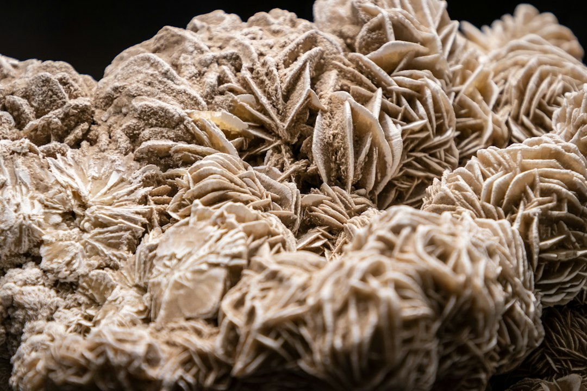

수출통제 3년, 광물 패권 전장 이동의 실체

[자료사진] 기사와 무관한 이미지입니다.
중국은 2023년 8월 갈륨·게르마늄을 시작으로 2024년 안티몬·흑연, 2025년 헬륨까지 수출통제 품목을 단계적으로 확대했다. 3년간 통제 품목 수는 4개에서 14개 이상으로 늘었고, 갈륨 국제 현물가격은 kg당 220달러에서 약 2,000달러로 9배 폭등했다.
수출허가제의 실제 작동 방식은 단순 금수가 아니다. 중국 상무부가 건별 심사를 통해 물량·행선지·최종 사용자를 통제하는 구조로, 허가 발급 지연만으로도 수요기업의 생산 일정을 3~6개월 교란할 수 있다. 갈륨 기준 중국의 전 세계 정제 점유율은 여전히 80% 이상이다.
한국의 경우 고려아연이 2028년 연 15.5t 갈륨 국내 생산을 목표로 하지만, 2025년 현재 국내 정제 공급량은 수요의 12% 미만이다. 나머지 88% 이상을 중국산에 의존하는 구조에서 수출허가 지연이 발생하면 GaN 전력반도체·광통신 부품 생산라인이 직격탄을 맞는다.
자원전쟁의 새 전장은 광산이 아니라 수출허가 창구다. 매장량 기준 세계 1위 보크사이트 보유국인 기니가 갈륨 공급망에서 존재감이 없는 이유가 여기 있다. 정제 설비와 허가 체계를 쥔 쪽이 실질 지배력을 갖는다.
이번 구도 변화의 핵심은 '자원 민족주의 2.0'이다. 1.0이 매장량·채굴권 확보였다면 2.0은 정제·가공·수출허가를 패키지로 장악하는 방식이다. 중국이 갈륨·게르마늄으로 시작해 헬륨까지 확장한 것은 반도체 제조의 3대 공정(증착·식각·이온주입)을 동시에 압박하려는 전략적 포트폴리오다.
한국 산업계가 놓치고 있는 포인트는 '가격 폭등'보다 '납기 불확실성'이 더 큰 리스크라는 점이다. 갈륨 현물을 2,000달러에 살 수 있어도 허가가 안 나오면 살 수 없다. 이 납기 리스크가 GaN 파워반도체 양산 일정에 반영되기 시작하면 전력 인프라·전기차·데이터센터 투자 계획 전반이 흔들린다.
정제 역량을 이미 보유한 비중국 기업들이 직접 수혜자다. 캐나다 5N Plus(갈륨 정제), 독일 PPM Pure Metals, 일본 Dowa Mining이 대표적으로 이들의 수주 잔고는 2024년 대비 평균 2.3배 증가한 것으로 파악된다.
한국 내에서는 고려아연(2028년 양산 예정)과 함께 갈륨·게르마늄 재활용(리사이클링) 특허를 보유한 희소금속 전문 기업들이 수혜 포지션에 있다. 반도체 웨이퍼 스크랩에서 갈륨을 회수하는 공정을 보유한 기업의 공급 단가는 신규 정제 대비 30~40% 낮다.
GaN 전력반도체를 핵심 소재로 쓰는 전력 변환 장비·EV 인버터 제조사가 단기 최대 피해자다. 국내 전력반도체 수요 기업 중 갈륨 재고를 3개월 이상 확보한 곳은 전체의 20% 미만으로 추정된다.
광산 채굴권 확보에 집중해온 자원 펀드들도 손실 포지션이다. 콩고·기니·호주 광산 지분을 매입한 후 정제 단계 부재로 실질 공급망 가치 창출에 실패한 사례가 2024~2025년 사이 복수 확인됐다.
단기(6개월): 갈륨·게르마늄 현물 재고를 최소 6개월치로 늘리되, 단순 가격 헤지보다 '허가 발급 지연' 시나리오를 기준으로 재고 목표를 설정해야 한다. 중국 이외 루트(캐나다·독일) 공급 계약을 지금 당장 병행해두지 않으면 2026년 신규 통제 품목 확대 시 선택지가 없어진다.
중기(1~2년): 갈륨 리사이클링 기술을 보유한 국내외 스타트업에 대한 지분 투자 또는 장기 구매 계약(오프테이크) 협상을 서둘러야 한다. 리사이클 갈륨의 순도(4N급, 99.99%)는 이미 신규 정제 제품과 동등 수준에 도달했다.
장기(3년+): 고려아연 2028년 양산 라인에 공동 투자자로 진입하거나, 산업부 소부장 지원 1,700억 원 프로그램의 '핵심광물 정제' 트랙을 활용해 인증·테스트 비용을 선제 분담하는 구조를 만들어야 한다. 국내 수요 기업이 공동으로 구매 보증을 제공하는 컨소시엄 방식이 현실적이다.
실제 조달 현장에서는 — 수출허가 심사 기간이 명목상 45일이지만 실제로는 90~150일로 늘어지는 사례가 2024년 하반기부터 빈번해졌다. 중국 공급사와의 계약서에 '허가 지연 시 납기 연장 자동 인정' 조항이 없으면 바이어가 모든 리스크를 떠안는 구조다. 지금 당장 기존 계약서의 force majeure 조항이 수출통제를 포함하는지 법무 검토가 필요하다.
이 포스팅은 쿠팡 파트너스 활동의 일환으로 수수료를 제공받습니다.